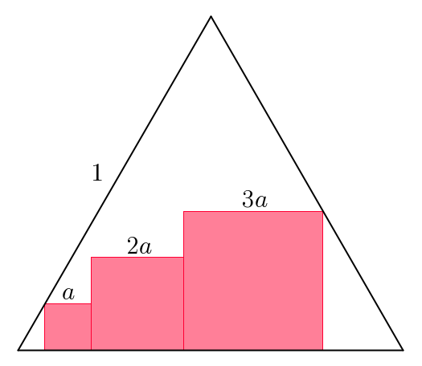
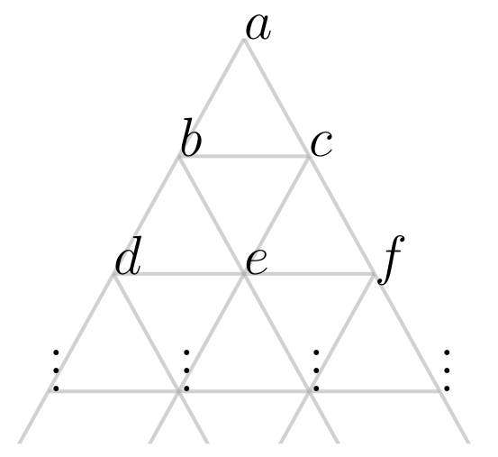

Problems 2026 First Round
Level II - First Part
Choose and solve only one of the following problems:
\[\rule{0pt}{0cm}\]
\[\rule{0pt}{0cm}\]
Problem 2
Bianca has a calculator with two special buttons $A$ and $B$. Given a certain value $x$, $A$ takes $x$ into $\frac1x$, while $B$ takes $x$ into $1-x$. If she starts with some number $x$ and presses the special buttons in the order $$A,B,A,B,A,B,\ldots,A,B$$ starting with $A$ and alternating each time such that each button is pressed 1013 times, which value will she obtain at the end?
Problem 1
The figure shows an equilateral triangle of side 1, and three internal squares tangent to the base of the triangle and to each other as shown. The respective sides of the squares are $a,2a$ and $3a$, and as shown, the smallest and largest squares each touch one additional side with a vertex. Knowing that $a$ can be expressed as $$a=\frac{A+B\sqrt{3}}{C},$$ with $A,B,C\in\mathbb{Z}$ and the expression is as reduced as possible, determine the value of $A+B+C$.
The figure shows an equilateral triangle of side 1, and three internal squares tangent to the base of the triangle and to each other as shown. The respective sides of the squares are $a,2a$ and $3a$, and as shown, the smallest and largest squares each touch one additional side with a vertex. Knowing that $a$ can be expressed as $$a=\frac{A+B\sqrt{3}}{C},$$ with $A,B,C\in\mathbb{Z}$ and the expression is as reduced as possible, determine the value of $A+B+C$.

Bianca has a calculator with two special buttons $A$ and $B$. Given a certain value $x$, $A$ takes $x$ into $\frac1x$, while $B$ takes $x$ into $1-x$. If she starts with some number $x$ and presses the special buttons in the order $$A,B,A,B,A,B,\ldots,A,B$$ starting with $A$ and alternating each time such that each button is pressed 1013 times, which value will she obtain at the end?
Level II - Second Part
Bianca proposes the following problem to Nils, she constructs a big triangular array of numbers as shown below

such that the possible values of $a,b,c,$ and so on are $-1,0$ and 1. She first chooses one value for $a$, and then randomly assigns values making sure that no two adjacent values are equal.
Task 1: If the bottom of the array has 101 numbers, determine the maximum value of the sum of all the values in the array.
Task 2: If the bottom of the array has 2025 numbers, show that the sum of all the values in the array is independent of the choice of $a$.Nils, would also like to give Bianca a similar problem, either using arrays of numbers or sums of integers or anything interesting he can think of.
Task 3: Help Nils create a nice problem he can give to Bianca.